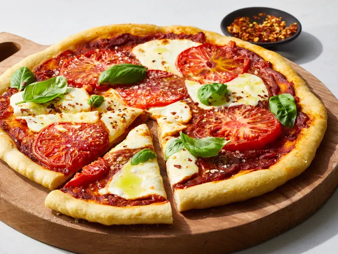

Home
Pizza

Description
This recipe makes two pizzas, which you can customize with your choice of toppings to feed the entire family.
Home cooks rave about this pizza dough, saying it is easy to knead and makes a great thick crust.
Ingredients
Dough
- 1 (.25 ounce) envelope active dry yeast
- 1 cup lukewarm water
- 3 cups all-purpose flour
- 2 tablespoons shortening
- ¼ teaspoon salt
Sauce
- 1 tablespoon vegetable oil
- ½ cup chopped onion
- 1 (6 ounce) can tomato paste
- ¾ cup water
- 1 teaspoon salt
- ½ teaspoon white sugar
- ½ teaspoon dried oregano
- ¼ teaspoon garlic powder
- ¼ teaspoon dried basil
- ¼ teaspoon dried marjoram
- ¼ teaspoon ground cumin
- ¼ teaspoon chili powder
- ⅛ teaspoon crushed red pepper flakes
- ⅛ teaspoon ground black pepper
Cheese
- 1 (12 ounce) package shredded mozzarella cheese, or to taste
Steps
- Gather all ingredients.
- Make the dough: Dissolve yeast in lukewarm water in a small bowl. Let stand until creamy, about 10 minutes.
- Combine flour, shortening, and salt in a large bowl; add yeast mixture and stir until dough comes together. Knead dough on a lightly floured surface until smooth and elastic, about 8 minutes.
- Lightly oil a large bowl. Place dough into the bowl and turn to coat with oil. Cover with a damp cloth and let rise in a warm place until doubled in volume, about 45 minutes.
- Meanwhile, make the sauce: Heat oil in a small saucepan over medium heat. Add onion and sauté until tender, about 5 minutes.
- Stir in tomato paste, water, salt, sugar, oregano, garlic powder, basil, marjoram, cumin, chili powder, red pepper flakes, and black pepper; simmer for 15 to 20 minutes.
- Preheat the oven to 400 degrees F (200 degrees C).
- Divide dough in half. Roll each half into a 12-inch circle. Place dough onto two 12-inch pizza pans; cover with sauce and mozzarella cheese.
- Bake in the preheated oven until crusts are golden brown, about 20 minutes.